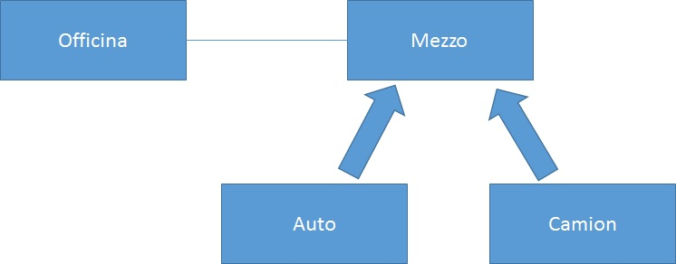

Fondamenti di Informatica II - Progettazione del Software - A.A. 2015/16
Esercitazione 1 - 2/03/2016
Scaricare i file ausiliari allo svolgimento degli esercizi: src.tar.gz
Esercizio 1.
Dopo aver analizzato la realizzazione
del
Tipo astratto
Pila con uno schema realizzativo sia con side-effect (senza
condivisione di memoria) sia funzionale (con condivisione di memoria) realizzare
il Tipo Astratto Lista
con gli stessi schemi realizzativi. Scrivere anche due classi "main" per provare
le diverse realizzazioni.
- Effettuare opportunamente anche l'overriding del metodo hashcode
.
- Realizzare la classe utilizzando i Generics.
Per quanto riguarda la realizzazione funzionale del tipo astratto Lista si vogliono inoltre implementare le seguenti operazioni:
- calcolo della lunghezza della lista, che dato un oggetto Lista
calcola la lunghezza della lista che esso rappresenta;
- aggiunta un elemento in coda alla lista, che dato un oggetto
Lista ed un elemento da aggiungere restituisce un nuovo oggetto
Lista ottenuto dal primo aggiungendo il nuovo elemento come ultimo elemento
della lista;
- concatenazione (``append'') di due liste, che dati due oggetti
Lista restituisce un nuovo oggetto Lista
ottenuto concatenando le due liste; cioè restituendo una lista composta dagli
elementi della prima lista e seguiti dagli elementi della seconda lista;
- restituzione dell'elemento i-esimo della lista, che preso un oggetto
Lista e un intero i (dove i = 0,.., lung. della lista - 1)
restituisce l'elemento in posizione i;
- inserimento di un nuovo elemento in posizione i-esima, che preso un oggetto
Lista, un intero i (dove i = 0,.., lung. della lista - 1) e
un elemento da inserire, restituisce un nuovo oggetto Lista ottenuto
dal primo aggiungendo in posizione
i-esima il nuovo elemento.
Per realizzare queste operazioni facciamo uso della ricorsione, sfruttando il
fatto che le liste sono definite induttivamente: la lista vuota è una lista,
aggiungendo un elemento in testa ad una lista (cons) otteniamo una lista,
nient'altro è una lista.
- TipoAstratto Lista(T)
-
- Domini
-
- Lista
- : dominio di interesse del tipo
- T
- : dominio degli elementi che formano le liste
- Funzioni
-
- listaVuota() --> Lista
- pre: nessuna
post: RESULT è la lista vuota
- estVuota(Lista l) --> Boolean
-
pre: nessuna
post: RESULT è true se la lista l è
vuota, false altrimenti
- cons(T e, Lista l) --> Lista
- pre: nessuna
post: RESULT è la lista ottenuta da l
inserendo e come primo elemento
- car(Lista l) --> T
- pre: l non è la lista vuota
post: RESULT è il primo elemento di l
- cdr(Lista l) --> Lista
- pre: l non è la lista vuota
post: RESULT è la lista ottenuta da l
eliminando il primo elemento
- FineTipoAstratto
-
- TipoAstratto Pila(T)
-
- Domini
-
- Pila
- : dominio di interesse del tipo
- T
- : dominio degli elementi che formano le liste
- Funzioni
-
- pilaVuota() --> Pila
-
pre: nessuna
post: RESULT è la pila vuota
- estVuota(Pila p) --> Boolean
- pre: nessuna
post: RESULT è true se la pila p è
vuota, false altrimenti
- push(T e, Pila p) --> Pila
- pre: nessuna
post: RESULT è la pila ottenuta da p
inserendo e in cima
- top(Pila p) --> T
- pre: p non è la pila vuota
post: RESULT è l'elemento affiorante di p
- pop(Pila p) --> Lista
- pre: p non è la pila vuota
post: RESULT è la pila ottenuta da p
eliminando l'elemento in cima
- FineTipoAstratto
-
Esercizio 2.

Data l'implementazione fornita della classe Mezzo e lo schema concettuale in figura:
- Realizzare il Tipo
astratto
Officina.
- Realizzare le seguenti specializzazioni della classe Mezzo
ridefinendo il metodo getNumeroRuote():
Auto
- Costruttore Auto(String unaMarca, String unModello, String
unColore, String targa)
- Esiste un metodo getTarga() che restituisce la targe dell'auto
- Il metodo getNumeroRuote() restituisce sempre 4.
Camion
- Costruttore Camion(String unaMarca, String unModello, String
unColore, boolean rimorchio) dove rimorchio vale
true se il camion è provvisto di rimorchio.
- Esiste un metodo haRimorchio() che restituisce true se
il camion è provvisto di rimorchio.
- Il metodo getNumeroRuote() restituisce 8 se haRimorchio()
vale true oppure 4 se haRimorchio() vale false
- Realizzare una classe "main" per provare le implementazioni.
Note sulla realizzazione.
- Rappresentazione dei valori: dobbiamo rappresentare da una parte la partita
IVA dell'officina e dall'altra i mezzi presenti nell'officina con associato il
loro status.
- La partita IVA la rappresentiamo con un campo dati privato (variabile di
istanza) String.
- Le auto presenti nell'officina le rappresentiamo
attraverso un campo dati privato di tipo HashSet contentente record di tipo MezzoInOfficina. Un record MezzoInOfficina possiede due campi dati: il Mezzo affidato all'officina,
e lo stato di riparazione.
- Schema realizzativo: essendo Officina un tipo astrazione di entità
sceglieremo uno schema realizzativo con side-effect (senza condivisione di
memoria). Gli oggetti Auto verranno utilizzati in sharing.
- Realizziamo la funzione crea
attraverso un costruttore con un parametro String per rappresentare
la partita IVA. Poiché Officina è un tipo astrazione di entità, il metodo
equals ereditato da Object che verifica l'uguaglianza superficiale
è sufficiente a definire l'uguaglianza tra officina (cioè un'officina è uguale
solo a se stessa).
- Realizziamo la funzione mezziInOfficina come un metodo che ritorna un clone dell'HashSet<MezzoInOfficina> che Officina usa per rappresentare i mezzi presenti ed il loro stato.
- Perche' occorre ritornare un clone dell'HashSet? Quale richi corriamo se torniamo la struttura dati originale?
- (esercizio per casa) mezziInOfficina deve ritornare un iteratore di MezzoInOfficina dove il metodo remove e' stato disabilitato.
- TipoAstratto Officina
-
- Domini
-
- Officina
- : dominio di interesse del tipo
- Mezzo
- : dominio degli oggetti presenti nell'officina
- Funzioni
-
- crea(Stringa pi) --> Officina
- pre: nessuna
post: RESULT è un'officina avente pi come
partita IVA e con nessuna auto
- partitaIva(Officina o) --> String
- pre: nessuna
post: RESULT è la partita IVA dell'officina o
- arrivaMezzo(Officina o, Mezzo a) --> Officina
- pre: a non è presente nell'officina
post: RESULT è l'officina ottenuta da o
aggiungendo il mezzo a e attribuendo a tale auto lo status di
inRiparazione
- approntaMezzo(Officina o, Mezzo a) --> Officina
- pre: a è presente nell'officina ed ha con status
inRiparazione
post: RESULT è l'officina ottenuta da o
cambiando lo status del mezzo a in pronto
- parteMezzo(Officina o, Mezzo a) --> Officina
- pre: a è presente nell'officina ed ha con status
pronto
post: RESULT è l'officina ottenuta da o
eliminando il mezzo a
- estInRiparazione(Officina o, Mezzo a) --> Boolean
- pre: nessuna
post: RESULT è true se se a è presente
nell'officina o ed ha lo status inRiparazione;
false altrimenti
- estPronto(Officina o, Mezzo a) --> Boolean
- pre: nessuna
post: RESULT è true se a è presente
nell'officina o ed ha lo status pronto;
false altrimenti
- mezziInOfficina() --> Set di Mezzi ed il loro stato
- pre: nessuna
post: RESULT è l'insieme di mezzi affidati all'officina con associato il loro stato
- FineTipoAstratto
-